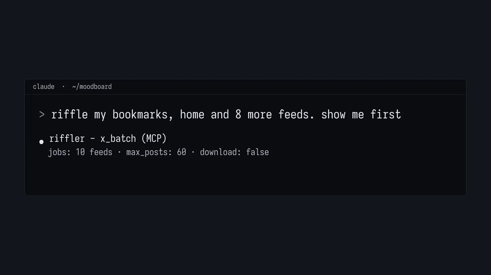

Let the feed run. Keep the originals.
Riffler lets Claude scroll up to 10 X feeds at once and save the full-size images and videos to your repo. Free, MIT.
claude mcp add riffler -- npx -y github:rayhankhilji/x-for-agents
npx -y github:rayhankhilji/x-for-agents loginUse a spare account for big runs; your cookies stay with you, never in chat or the repo. The limits
Sample output batch run rb81c04e · 10 jobs · 600 posts · 720 files · 41.2s
Sample images: public domain, from NASA, The Met and the Art Institute of Chicago. Credits
Watch a run.
38 seconds, no sound: one sentence to Claude, 10 feeds at once, one contact sheet, the originals in your repo.

Play the 38 second film10 feeds at once, on one login.
Each tab scrolls the moment X answers, then scrolls again. Images, video and fonts are never drawn on screen, only downloaded.
- bookmarks60 posts · 81 media · 9.8s
- likes @sample0160 posts · 64 media · 8.1s
- user_media @sample0260 posts · 70 media · 7.4s
- search filter:videos60 posts · 92 media · 11.6s
- home60 posts · 58 media · 6.9s
- user_media @sample0360 posts · 77 media · 8.8s
- list 172944812060 posts · 66 media · 9.2s
- search #poster60 posts · 73 media · 10.4s
- following60 posts · 69 media · 7.7s
- user_media @sample0460 posts · 70 media · 8.3s
Sample output batch run rb81c04e (rows = all jobs in order) · 10 jobs · 600 posts · 41.2s
Claude never looks at a screenshot of X.
It reads the data X's own web app loads, so what comes back is a few lines of text.
x_batch Sample outputabout 250
tokens for 10 feeds, 600 posts and 720 files.
941 characters. No images.
60 thumbnails, one look.
When Claude needs to see, it gets one contact sheet: about 700 to 1,500 tokens. A letter picks one item from a post, so 5b is the second picture or video in post 5.
Draw a ring around frames to keep them, or click one.
x_preview returns one image Sample output


 0:27
0:27- 0:09


- 0:43
- gif
 0:12
0:12

- 0:09

- gif

- 0:09


- 2:15


- 0:27


- 0:27


The ring becomes the call
x_download run:"rb81c04e" rows:"2,5b,9-12"files: 6 new, 0 had, 0 failed, 41.6MB
x-media/sample08/1858927361_1.jpgx-media/sample09/1858813738_2.mp4x-media/sample07/1858596516_1.jpgx-media/sample04/1858546660_1.mp4x-media/sample01/1858484054_1.jpgx-media/sample08/1858425822_1.jpgAdd Riffler to your client.
Pick yours. Every snippet runs the same server from GitHub and needs Node 20 or later.
Claude Code
Run this in your terminal. The server builds itself on first start.
claude mcp add riffler -- npx -y github:rayhankhilji/x-for-agents{
"mcpServers": {
"riffler": {
"command": "npx",
"args": ["-y", "github:rayhankhilji/x-for-agents"],
"env": { "X_AUTH_TOKEN": "${X_AUTH_TOKEN}", "X_CT0": "${X_CT0}" }
}
}
}Claude Code asks you to approve servers from a project .mcp.json the first time.
Claude Desktop
Settings, Developer, Edit Config, then add this.
{
"mcpServers": {
"riffler": {
"command": "npx",
"args": ["-y", "github:rayhankhilji/x-for-agents"]
}
}
}Quit Claude Desktop fully and open it again to load the server. On Windows the file is %APPDATA%\Claude\claude_desktop_config.json.
Codex
Run this, or add the block to your Codex config. The CLI, IDE extension and app share it.
[mcp_servers.riffler]
command = "npx"
args = ["-y", "github:rayhankhilji/x-for-agents"]
env_vars = ["X_AUTH_TOKEN", "X_CT0"]codex mcp add riffler -- npx -y github:rayhankhilji/x-for-agentsA project .codex/config.toml loads only in trusted projects. env_vars forwards your shell values, so no cookie sits in the file.
Cursor
Add this to the project file, or to ~/.cursor/mcp.json for every project.
{
"mcpServers": {
"riffler": {
"type": "stdio",
"command": "npx",
"args": ["-y", "github:rayhankhilji/x-for-agents"],
"env": { "X_AUTH_TOKEN": "${env:X_AUTH_TOKEN}", "X_CT0": "${env:X_CT0}" }
}
}
}Visual Studio Code
Add this to the workspace file. VS Code asks for each cookie once and stores it as a secret.
{
"inputs": [
{ "type": "promptString", "id": "x-auth-token", "description": "X auth_token cookie", "password": true },
{ "type": "promptString", "id": "x-ct0", "description": "X ct0 cookie", "password": true }
],
"servers": {
"riffler": {
"type": "stdio",
"command": "npx",
"args": ["-y", "github:rayhankhilji/x-for-agents"],
"env": { "X_AUTH_TOKEN": "${input:x-auth-token}", "X_CT0": "${input:x-ct0}" }
}
}
}This file uses the servers key, not mcpServers.
Zed
Run zed: open settings file and add this, or use Settings, AI, MCP Servers.
{
"context_servers": {
"riffler": {
"command": "npx",
"args": ["-y", "github:rayhankhilji/x-for-agents"]
}
}
}Zed calls them context_servers.
Cline
MCP Servers, Configure, Configure MCP Servers, then add this.
{
"mcpServers": {
"riffler": {
"command": "npx",
"args": ["-y", "github:rayhankhilji/x-for-agents"],
"disabled": false,
"autoApprove": []
}
}
}Gemini CLI
Add this to your user or project settings file.
{
"mcpServers": {
"riffler": {
"command": "npx",
"args": ["-y", "github:rayhankhilji/x-for-agents"],
"env": { "X_AUTH_TOKEN": "$X_AUTH_TOKEN", "X_CT0": "$X_CT0" }
}
}
}Set the cookies in the env block: Gemini CLI hides inherited variables named like tokens. Google moved unpaid users to Antigravity CLI in June 2026.
Reads from
Then sign in to X, once
On a laptop, this opens a browser window. Sign in and close it.
npx -y github:rayhankhilji/x-for-agents loginIn a cloud session, copy auth_token and ct0 from your X cookies into the environment's settings as X_AUTH_TOKEN and X_CT0. Not into chat.
5 tools Claude can call.
Ask in a sentence. Claude picks the tool and the arguments.
x_collectScrolls one feed, filters as it goes, downloads, and returns a run id with numbered rows.
x_collect source:"user_media" target:"@handle" media_types:["video"]x_batchUp to 50 jobs across 10 tabs on one login. One line back per job.
x_batch jobs:[{source:"bookmarks"}, {source:"likes"}]x_previewOne contact sheet of up to 60 numbered thumbnails from a run.
x_preview run:"rb81c04e" rows:"1-60"x_downloadSaves the rows you name, by row string or by post URL.
x_download run:"rb81c04e" rows:"2,5b,9-12"x_statusLogin, account, tabs, rate limits left, ffmpeg and the output folder.
x_status
- Sources
homefollowinguseruser_mediasearchbookmarkslikeslistposturl- Filters
“Videos over 30 seconds with 1,000 likes or more, posted since March.”
media_types:["video"] min_duration_s:30 min_likes:1000 since:"2026-03-01"- Files
Originals at full size and the best video bitrate, named so re-runs skip what you already have. Set
X_OUTPUT_DIR=x-mediato keep them inside the project.x-media/<handle>/<postId>_<n>.jpg- Claude chat
Run
riffler serve --httpbehind a tunnel and add its URL as a custom connector; results open as a gallery in the chat. That server holds your cookies on a public URL, so setX_MCP_TOKEN.
Free and MIT licensed. No paid plan, no account with us. The only bill is the tokens Claude spends.
claude mcp add riffler -- npx -y github:rayhankhilji/x-for-agents